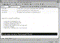

| ||||
With FrontPage, you can add Active Page elements such as hover buttons, marquees, search forms, page counters, and video clips. These elements can make your pages more interesting and useful.
In this exercise, you will add a marquee to your current page. A marquee is a region on a page that displays scrolling text when the page is viewed in a Web browser, such as Microsoft Internet Explorer. Marquees are a fun way to create moving text and headlines on your home page. They can be used to draw attention to news and events.
Formatting of marquee text must occur before you insert a marquee region. If the current FrontPage-based Web site has a theme applied, text color, size, and font may change dynamically.
The Marquee Properties dialog box is displayed. In this dialog box, you can adjust several marquee properties, including the speed and direction of movement, as well as marquee size and background color.
FrontPage adds a marquee region to the current page.

Click image to enlargeFigure 1. Adding a marquee
Later in this lesson, you will view the Tutorial Practice page in a Web browser, where you will be able to view the marquee you created here.
Figure 2. The Save button
The page is saved to the current FrontPage-based Web site.
Did you find this material useful? Gripes? Compliments? Suggestions for other articles? Write us!
© 1999 Microsoft Corporation. All rights reserved. Terms of use.